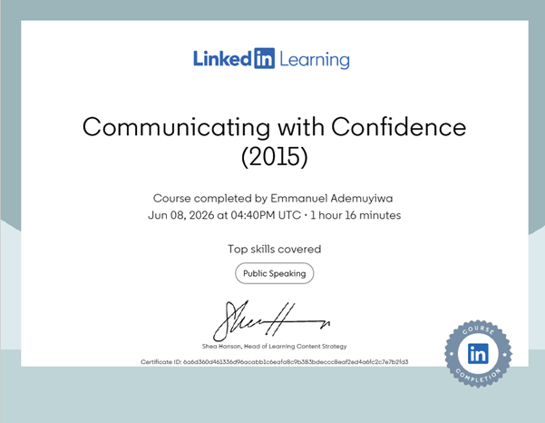

Great communication isn't about perfection — it's about engagement. A confident communicator looks and sounds like they mean what they're saying. They connect with their audience through three channels:
Fear of public speaking is deeply wired into us — neuroscientists link it to the same instinct hunters used to zero in on prey: intense vulnerability. The most common blockers are:
Many people get stuck repeating the same ineffective communication patterns without realising it. One-way communication — broadcasting without listening — cuts us off from our audience. Before speaking, ask yourself: "How do I want to be seen and perceived in this moment?"
The antidote is two-way delivery — one clear thought at a time. This slows down your racing brain, keeps you in the present, and lets you read whether your audience is actually following you.
Most people hold their breath when nervous — which amplifies tension. The course introduces Ujjayi breathing as a tool to activate the vagus nerve and calm the autonomic nervous system:
We stop breathing when we lose our place, forget what to say, or when someone asks a hard question. This technique is the reset button.
Every great communicator starts with a clear message: simple words, short sentences. Define your outcome first — are you persuading, introducing, or informing?
Use index cards (physical or mental) to structure any talk:
Change your inflection or tone intentionally when shifting topics — it signals a transition and keeps listeners engaged.
Silence is not weakness — it's one of the most powerful tools in a speaker's toolkit. Pause:
Slightly stretch the vowels in each word. It sounds subtle, but it naturally paces your speech and helps you control what comes out next.
You can tell exactly how connected a speaker is to their audience just by watching their eyes. Rules for strong eye contact:
Contrary to what many people think, talking with your hands is a feature, not a bug. Research shows it:
The issue isn't using hands — it's when gestures are repetitive, disconnected from the message, or excessively large.
Visualise what you're talking about. Let your eyes reflect the mood and tone. Your face should convey confidence, conviction, and connection — the 3 Cs of presence.
Anxiety doesn't stay hidden — it leaks. Common "tells" that signal nervousness to an audience:
Nervousness is universal — even the best speakers feel it. The shift happens when you stop trying to be a perfect speaker and start focusing on being a present communicator. Don't overthink your own performance. The audience isn't your judge — they're your conversation partner.
Develop a consistent ritual before any important communication:
Before any important conversation, presentation, or meeting:
Most of us have been taught to suppress nervous energy — hold still, don't gesture, don't show emotion. This course flips that completely. Real confidence is about presence, not perfection.
The most immediately applicable lesson for me: two-way delivery and the pause. In my tech trainings and presentations, I've seen how racing through content disconnects the audience. Slowing down, delivering one thought at a time, and pausing after key points is something I'm actively building into how I communicate.
I've started using the Index Card framework before every training session at Impact Digital Academy. The result? Students are more engaged, ask better questions, and retain more information. Communication isn't about performing — it's about connecting.